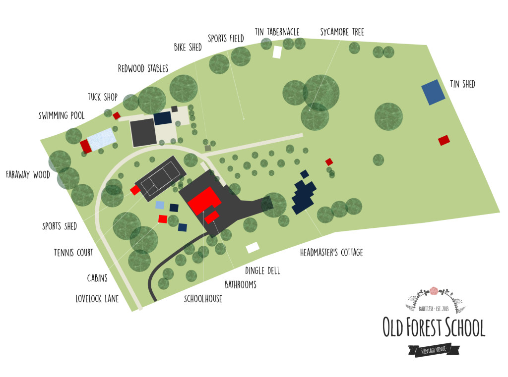

The Big Day
The Ceremony & Reception will take place at the same venue, Old Forest School in Pongakawa, Bay of plenty, New Zealand.
We have planned a laid back, family & friend orientated day in the countryside and are hoping for great weather so that our ceremony can take place outdoors (we do have a ‘plan B’!). Please bear this in mind when choosing your shoes & outfits! Some areas of the venue are off-limits or impractical for stilettos.
Venue
The address for the venue is:
Old Forest School795 Rotoehu RoadPongakawa 3186
For more detailed directions see: Travel Section
Bar
There will be a complimentary bar with beer, wine, non-alcoholic soft drinks & water throughout the day and evening. If you usually drink something quite specific or ‘exotic’ please feel free to let us know.
Parking
There is some parking available at the venue but space is very limited so please let us know in advance if you intend to drive so that we can ensure you have a space. Please note vehicles cannot be left at the venue overnight so you need to have a plan for removing the vehicle before midnight or utilise the courtesy bus instead. (see travel page for details).
Childcare
As you know you are welcome to bring along your little ones. We are looking into the possibility of arranging childcare at the venue. The details are still to be confirmed but if you are planning on bringing your children along, please let us know.